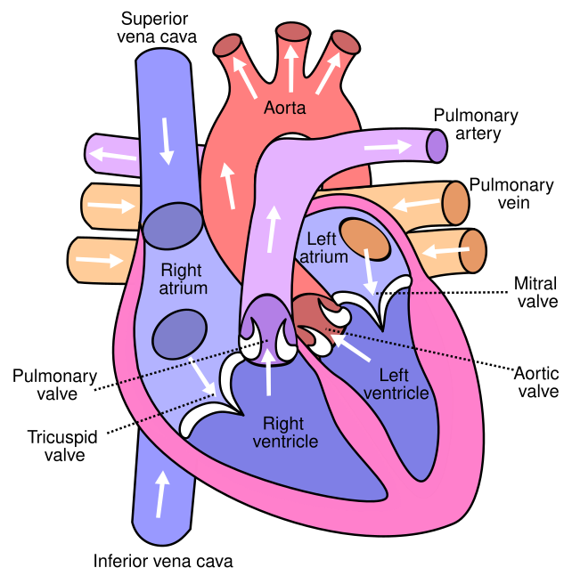
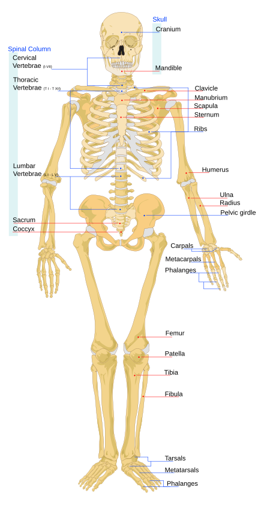
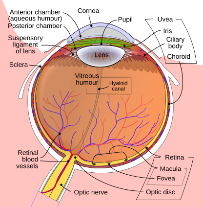

Advance Your Nursing Career with Global Licensing Preparation
Study nursing units, prepare for NCLEX-RN, UK CBT, Australia registration, and receive academic support through a secure medical learning platform built for nurses worldwide.
2500+ students trained
Pass-rate analytics
Academic support
Current pass readiness
94%
Based on mock exam analytics
How learning access is unlocked
How it works
A simple nursing learning flow before login.
Explore the platform, create an account, pay for your selected course, then learn from your student workspace.
Explore courses
Review BSCN units and international certification programs from the courses page.
Register or login
Create an account before accessing learning materials.
Pay securely
Use M-Pesa, card, PayPal, or bank payment to unlock the selected course only.
Start learning
Access lessons, videos, notes, quizzes, exams, certificates, and support.
Clinical learning
Study nursing concepts with visual medical guidance.
Students can learn anatomy, patient assessment, drug safety, emergency care, and licensing strategy with structured lessons and visual explanations.
Featured anatomy topic
Understanding the heart and circulation
Heart lessons help learners connect anatomy with clinical signs, vital signs, blood flow, medication effects, emergency warning signs, and patient education.
Cardiac chambers
Blood flow pathway
Assessment findings
NCLEX-style questions



Core anatomy areas included
Heart, skeleton, eye, respiratory system, nervous system, gastrointestinal system, reproductive health, renal system, and endocrine basics are organized for nursing revision and licensing practice.
Vital signs interpretation
Physical assessment
Clinical red flags
Patient education
Procedure preparation
Exam rationales
What learners get
More than videos: a complete nursing preparation environment.
Global NursePrep combines structured lessons, practical revision, assessment tools, and academic guidance for learners at different stages of medical training.
Guided lessons
Organized units for anatomy, physiology, pharmacology, medical-surgical nursing, pediatrics, mental health, midwifery, community health, and research.
Exam readiness
Timed practice, rationales, mock exams, weak-area review, performance tracking, question banks, and international licensing preparation.
Academic and clinical support
Research topic guidance, concept paper support, proposal development, report writing, slides, live class help, discussion support, and student consultation.
NCLEX preparation
Build clinical judgment for NCLEX-style questions.
NCLEX preparation focuses on patient safety, prioritization, clinical judgment, delegation, pharmacology, maternity, pediatrics, mental health, and medical-surgical decision making.
Clinical judgment cases
Priority and delegation questions
Pharmacology rationales
Timed mock exams
Weak-area analytics
Readiness tracking
About the platform
Premium medical learning for healthcare students, nurses, and medical professionals.
Global NursePrep brings courses, licensing preparation, academic support, payments, certificates, and student progress into one structured e-learning platform.
NCLEX-RN, UK CBT, Australia registration, CNA, ICU, emergency, and critical care tracks.
Topic identification, concept papers, proposals, analysis, reports, slides, and consultations.
Login, payments, protected course access, certificates, and student dashboards.
Purice AI, notifications, forums, live classes, and English/Swahili support.